WE Aérophoto 2007

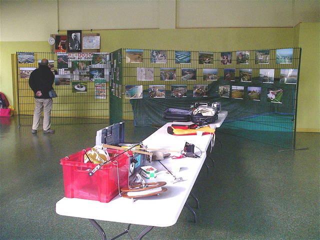
A Saint-Jean-les-2-Jumeaux, commune pléonastique (1) près de Meaux, le week-end Photo d'automne. Au programme, plein de choses, mais surtout des échanges multiples et informels, techniques et amicaux ! A l'arrivée, déballage d'objets divers plus ou moins liés à l'aérophoto et montage de grilles d'exposition pour les oeuvres nombreuses des participants...
1) Deux Jumeaux : le "Deux" ne sert à rien. Le nom pourrait venir de Castor et Pollux, patrons des bateliers, la Marne coulant dans ces terres. Le mot Deux lui-même pourrait dériver abusivement du "de" dans "S. Johannes de Gemellis" (appellation vers 1172)... Toutefois il existe une commune Deux-Jumeaux, dans le Calvados...

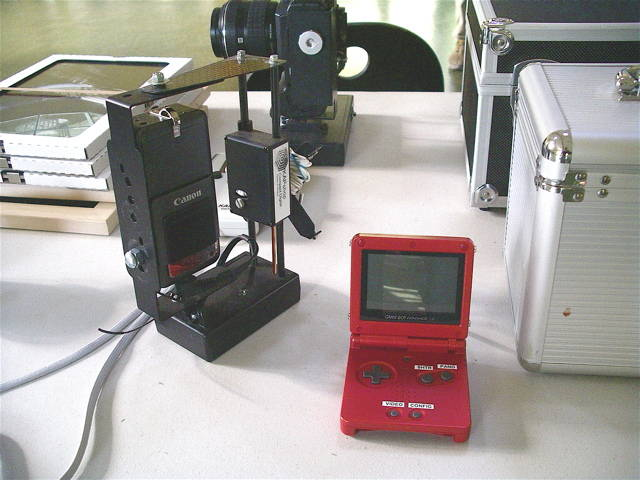
Peter a transformé un Game Boy en télécommande, avec retour video sur l'écran. Avantage (entre autres), l'écran du Game Boy peut se lire en plein soleil, ce qui est rare. Il en vend, si vous en voulez...

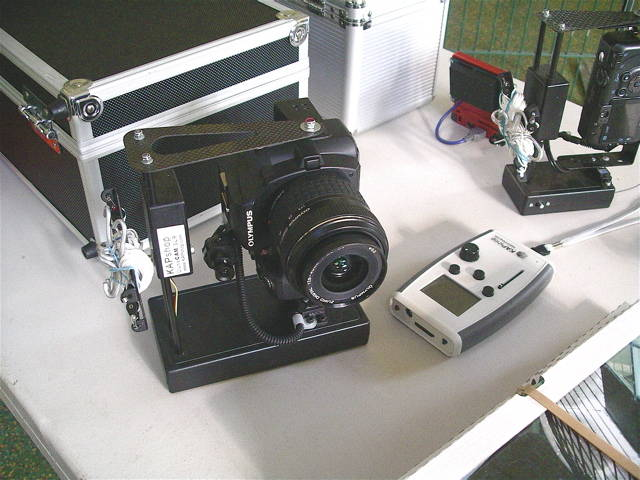
Il a aussi des nacelles, légères en elles-mêmes, mais qui peuvent emporter un énorme Reflex ! La télécommande va avec.

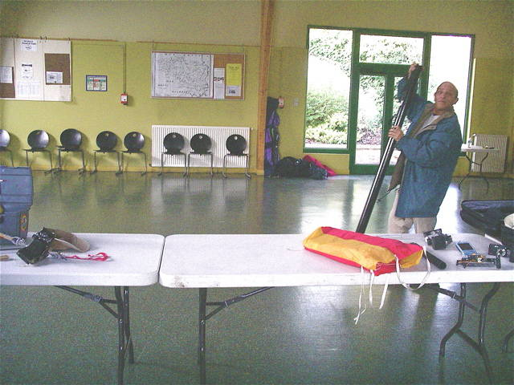
Mustapha a amené un petit mât (13 m !) en carbone pour prendre des photos quasi-aériennes de mariages, etc.

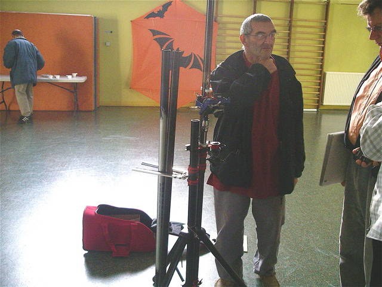
Jean-Claude est venu aussi, toujours inventif et créateur, avec un mât de sa fabrication, et un trépied pour monter tout ça tout seul sans problèmes...

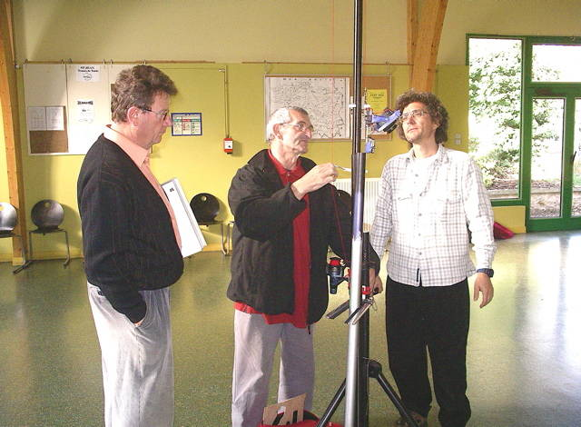
La nacelle photo coulisse sur la tige et se monte avec une drisse comme un drapeau !

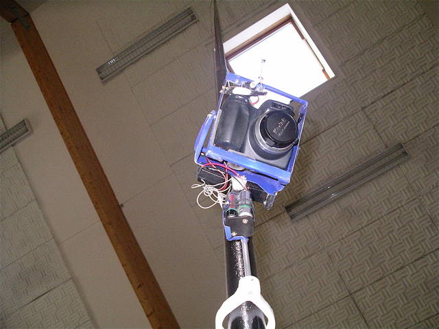
La nacelle monte, guidée par 2 coulisseaux en téflon, et jouit de la télécommande habituelle...

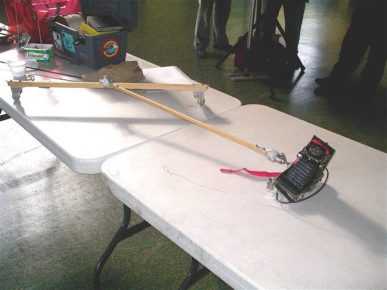
Pierre a amené une de ses premières nacelles, montée selon des plans du Lucane, et dotée d'un appareil à soufflet !

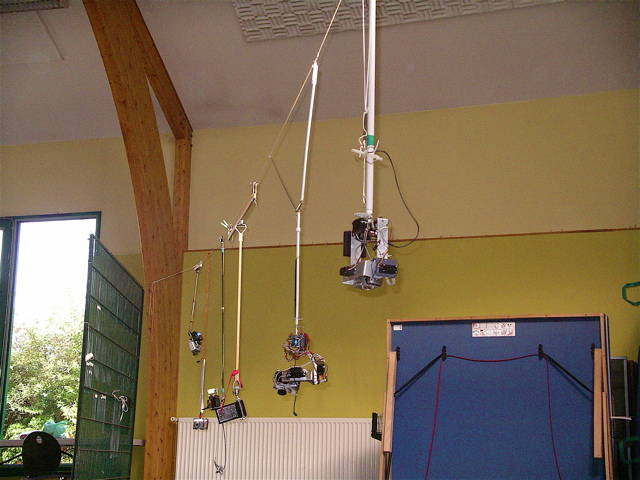
Les participants suspendent leurs nacelles à une ligne pour pouvoir discuter les mains libres...

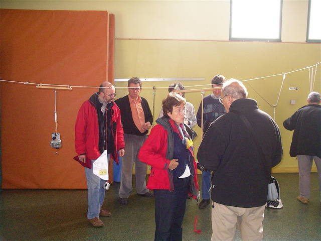
Et les discussions démarrent, par exemple sur les mérites comparés du Picavet et du pendulaire, les Français préférant le pendulaire, avec des amortissements divers !
Je suis novice en aérophoto, mais je ne vois pas comment le Picavet amortirait les balancements transversaux si les tirants sont tous amarrés sur l'unique ligne du CV...

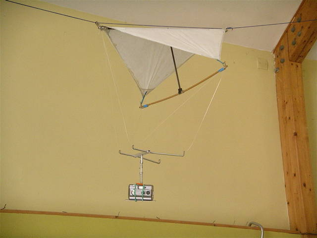
Christian a bien vu le problème et amarre ses tirants sur une voile maintenue dans l'axe par le vent...

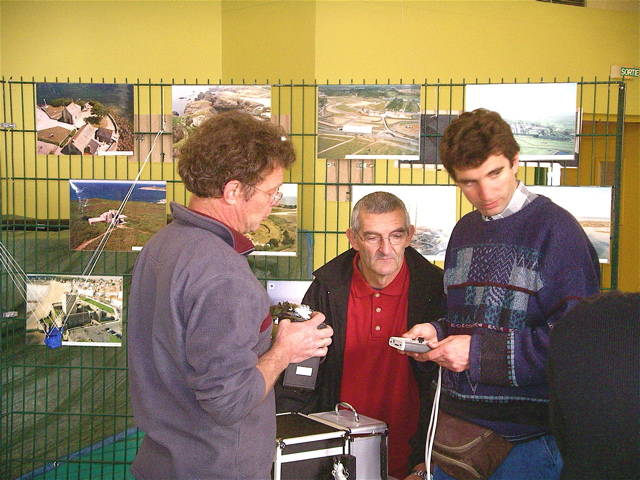
Devant les photos de l'expo, Christophe essaie une commande de Peter, sous les yeux de Jean-Claude...

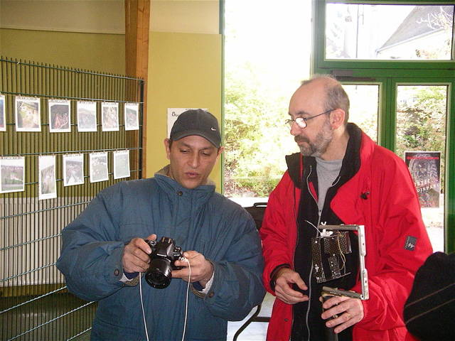
Mustapha présente la potence qui tient sa nacelle en haut du mât (à droite), et les résultats sur son appareil...

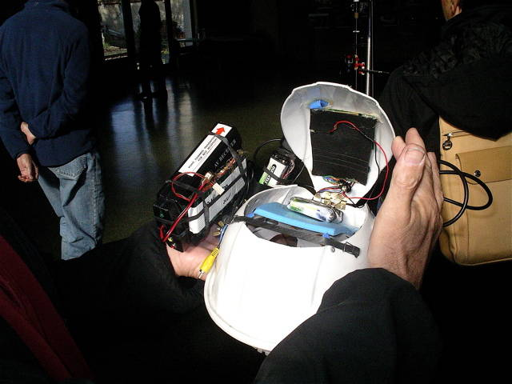
Jean-Claude présente son casque porte-tout et protecteur. Quand on soulève une calotte crânienne, on voit... mais non, pas le cerveau, suivez un peu, les batteries qui alimentent l'écran !

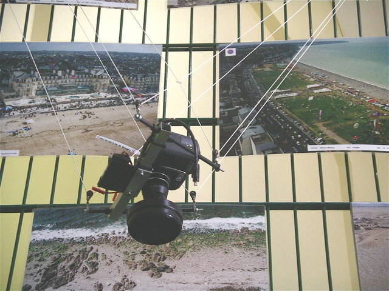
Un Picavet, à Peter sans doute, maintient vertical un fish-eye pour des photos d'horizon à horizon...

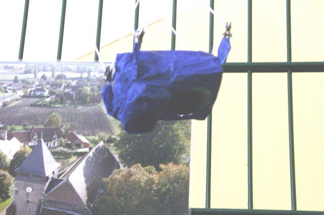
Un autre Picavet tient un appareil entièrement enveloppé de spi, sans doute pour protéger du sable dans les déserts...

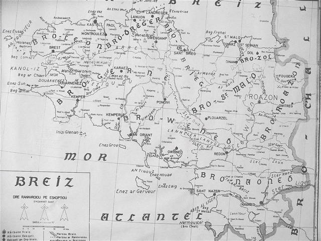
Les murs de la salle sont bientôt cachés par toutes les photos exposées, sauf une carte de Breizh, toute en breton, bien sûr !

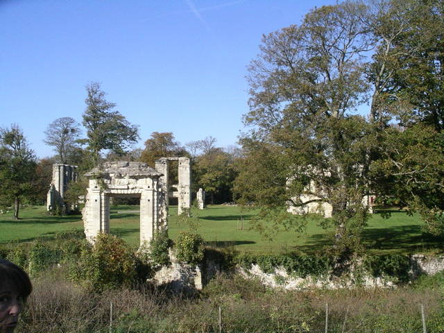
Bon, travaux pratiques, on va sur un château tranquille à Montceau-les-Meaux, mais fermé. On s'installe en bordure mais le vent est quasi-nul... Je fais quelques photos du sol pour avoir quand même une image !

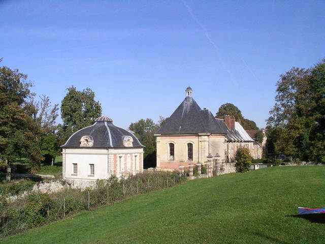
Le château lui-même est modeste, le pavillon d'entrée est plus beau, et la chapelle masque le bâtiment...

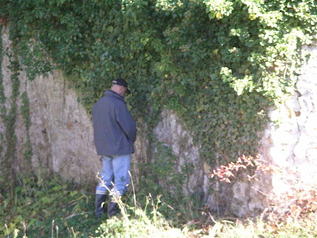
On se prépare à l'action sur les pelouses...

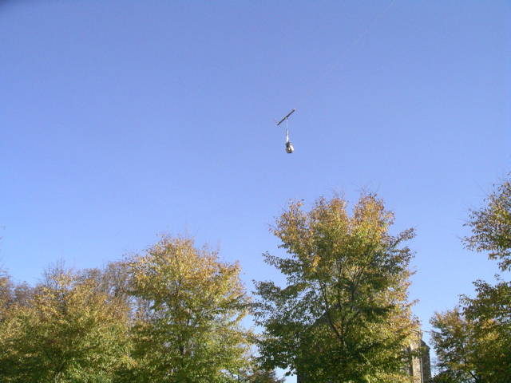
Le vent étant un peu monté, surtout passé 30 m, les nacelles prennent l'air et des photos...

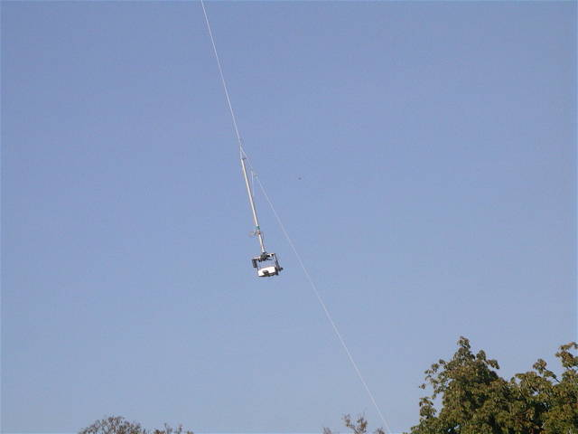
Une autre nacelle, avec un balancier et un amortisseur à ficelle pour le longi...

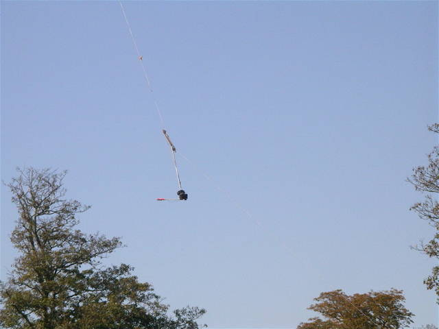
Encore une nacelle, avec une grande tige pour repérer du sol l'orientation...

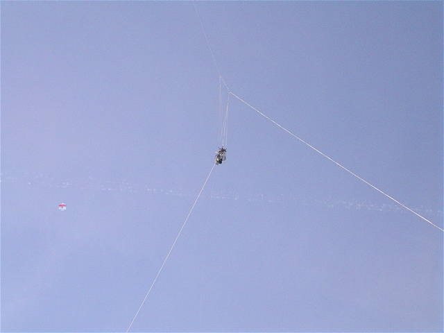
Il y a du vent, j'ai réussi à monter mon Rokkaku, mais il ne tire pas assez pour soulever ma "nacelle" ! Par contre une qui, elle, a réussi à voler accroche ma ligne, ça croche bien une nacelle. On ramène le tout en parallèle sans faire coulisser l'un sur l'autre, et donc sans bobo...

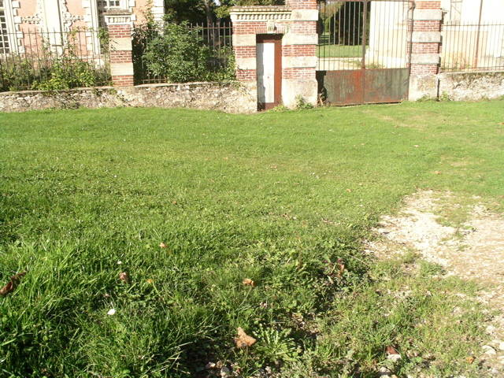
Pour voir, j'accroche quand même ma nacelle, mais je ne peux pas monter plus haut que ça, mon Rokkaku est trop bien tendu pour tirer...

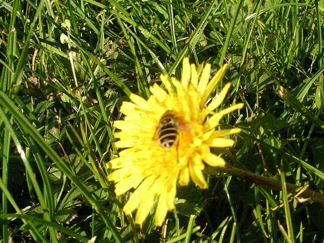
Je me rabats sur la macro, mais ça aussi ça demande aussi du métier...

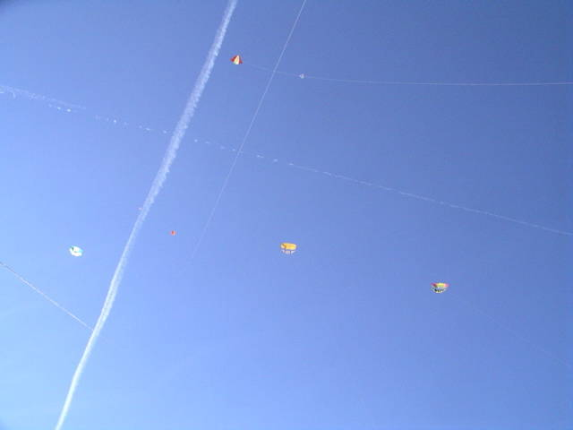
Finalement, il y a quand même du monde en l'air, toujours des CVs légers...

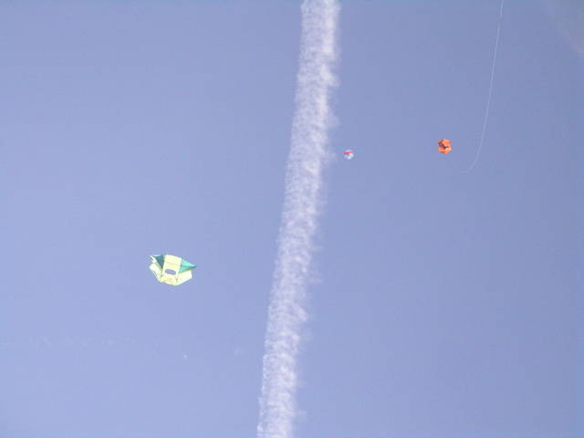
Mon petit Rokkaku est en l'air, en compagnie du grand de François et du Yakamate de Christian (le nom est venu en réponse à une question de Minoli qui demandait le nom de cet engin !)...

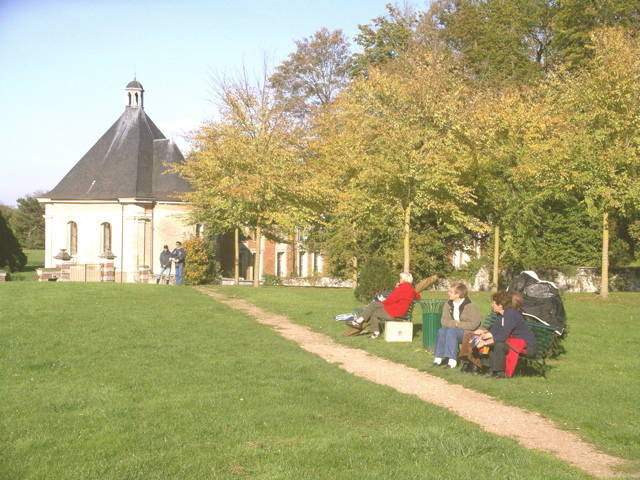
Pendant ce temps, il fait bon au soleil et ces dames papotent sur les bancs, derrière l'église !

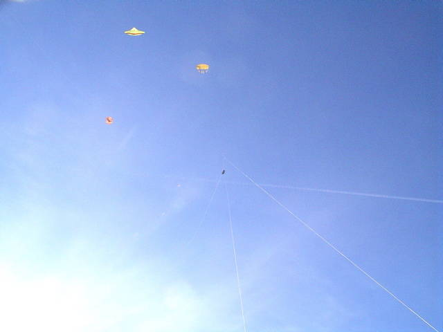
Sylvien a réussi aussi à décoller de la strate sans vent. Le Jessica a du mal à reculer par manque de lest arrière, et on ne peut donc pas le pomper en tirant-relâchant dans les conditions de faible vent. Mais bon, c'est parti, il est là-haut...

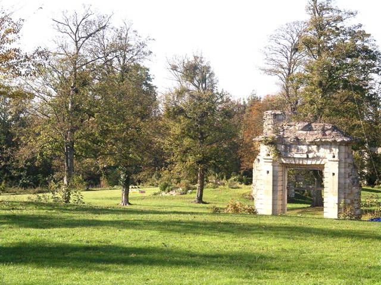
Mais que voit-on sous les arbres du parc interdit ? Ne serait-ce pas le CV d'Emmanuel ?

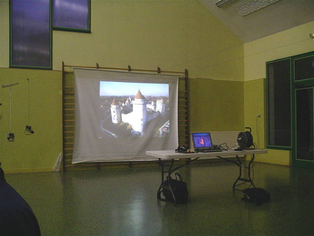
Temps de rentrer, Jean-François finit par descendre son cerf-volant. Dans la salle, discussions-échanges de nouveau... Mais aussi projection d'aérophotos, de Christophe surtout, il a plus de 1000 (je répète : mille) photos d'éoliennes "écologiques" à tous les stades de fabrication...

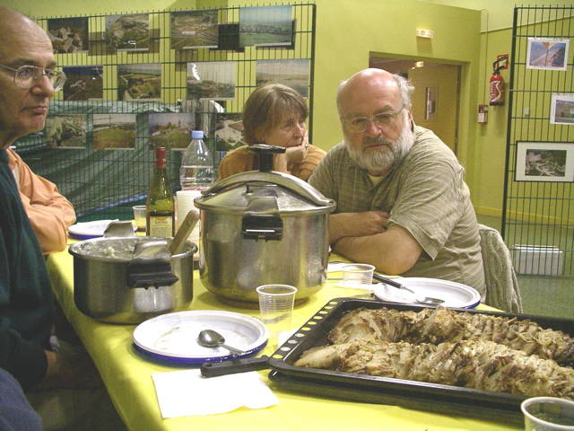
Le soir, plutôt qu'un repas au restau, Eliane s'est généreusement attelée à la confection d'un repas pour 25 personnes, elle a commencé jeudi matin... Certains se demandent avec angoisse si un tel repas est bien raisonnable !

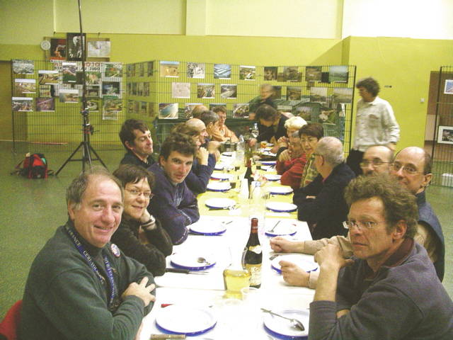
La grande table est remplie, il y a du vin et du cidre, certains ont même apporté des bouteilles supplémentaires !

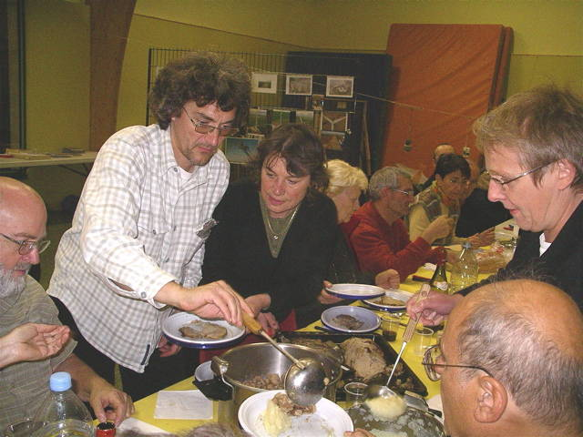
Emmanuel aide Eliane à servir les légumes, elle a bien mérité un coup de main, merci Eliane !

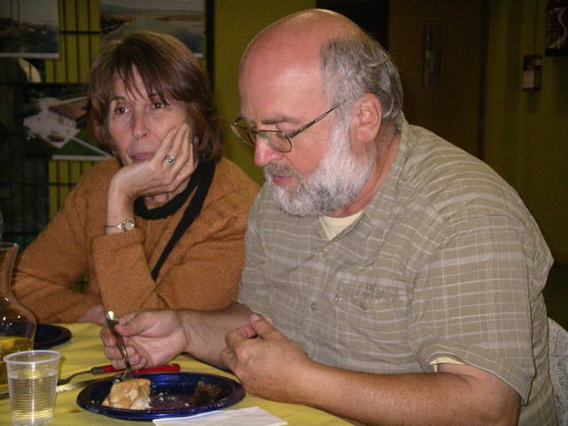
Au dessert, on voit que Sylvien se demande si ce dernier gâteau (il y en avait 4 ou 5 sortes) est bien adapté à son régime, mais un moment de honte est vite passé...

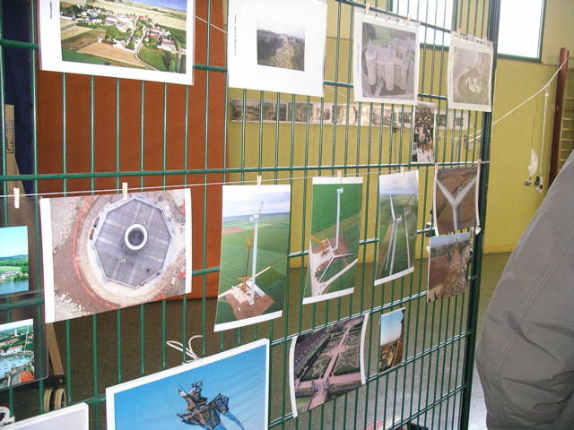
Après le repas, on repart sur des projections de photos, dont celles affichées dans l'expo ! Très instructif sur les éoliennes, leur socle de béton, la grue pour les monter et leur composition !

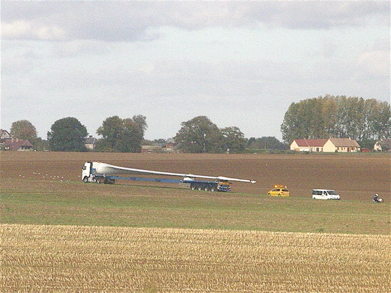
A propos, j'ai vu une pale d'éolienne passer sur un camion, c'est assez impressionnant !

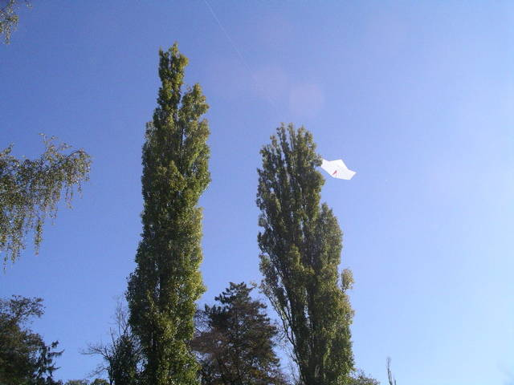
Le lendemain matin, après dissipation des brumes matinales, le vent est absolument nul. Nous allons essayer de voler (Sylvien, Gilles et moi seulement, avec des ultra-light) dans un champ de maïs coupé, dur aux jambes et accrochant les ficelles, la galère ! Ca volette un instant en déroulant du fil au sol et en tirant, puis le vent monte un tout petit peu, ça va mieux...

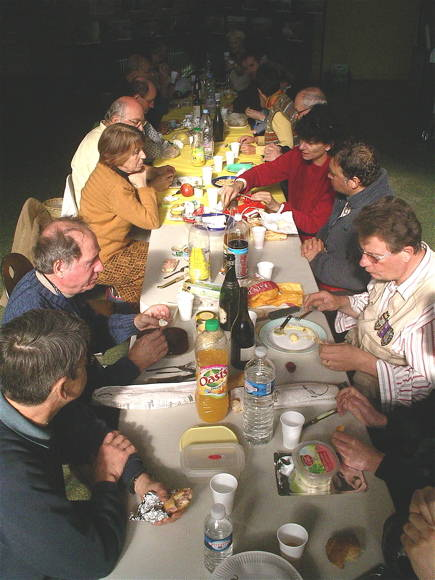
Retour à la salle pour déjeuner, inutile de se faire mal dans les maïs pour rien... Au déjeuner, je fais une quasi-aérophoto de ce sujet passionnant pour ne pas être le seul inactif dans ce domaine.

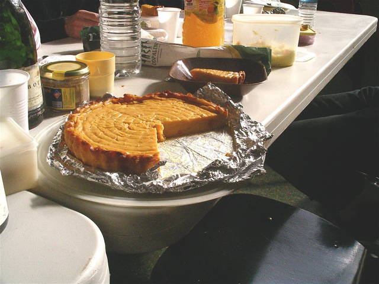
Outre le Bordeaux et le cidre, Christian a amené un gâteau-devinette, préparé par Minoli. Après moult hypothèses, il finit par nous dire qu'il est à base de patates douces !

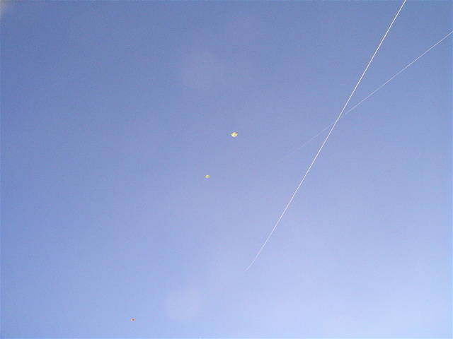
Après midi, vol à la ferme des Deux-Jumeaux. Les 2 jumeaux sont aussi en l'air, mais très haut, dans les mains de Gilles et Sylvien...

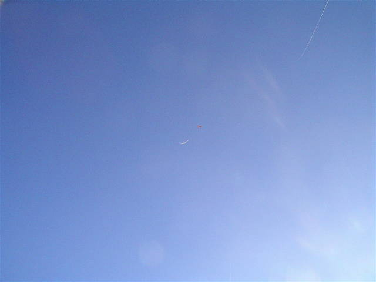
J'ai voulu essayer ma grue toute neuve, mais le terrain est un bout de route goudronnée avec un mètre d'herbe sur le bas-côté, habituel pour les aérophotographes, mais pas adapté à des essais... J'ai confirmé quand même des problèmes que je sentais, mais c'est normal pour un CV pas fini... Je fais voler mon Albatros1 avec le Rokkaku de François, ils se connaissent bien maintenant !

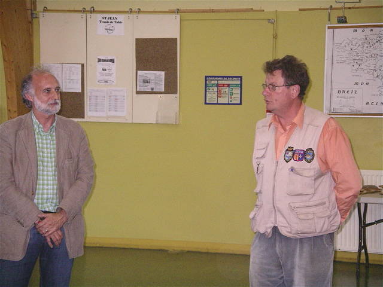
Ca se termine, il y a eu un peu de public pour l'expo, et le responsable de l'Animation de St-Jean y va de sa petite allocution. François lui répond et le remercie...

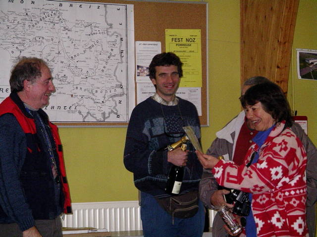
On remet les prix du concours d'aérophoto (celles qui sont parues dans le Lucane)... Jean-Claude est premier avec son église romane méridionale, Christophe 2ème avec le gros plan d'éolienne et 3ème avec le Château de Chamerolles. On remet aussi un petit cadeau à Eliane et à sa belle-mère qui a beaucoup contribué à la cuisine. Merci à elles !

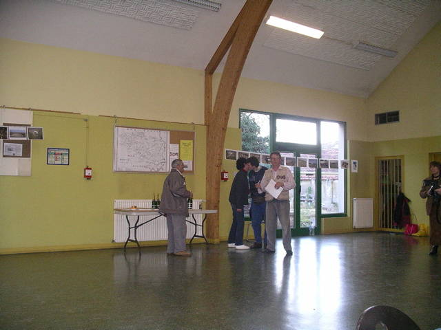
Catherine remet son prix à Christophe...

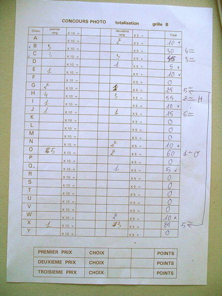
Pour les aérophotographes, voici la liste des photos avec les suffrages reçus, en premier et en deuxième choix. Tout le monde a voté. Les lettres correspondent aux chiffres dans la liste qui suit (pas aux lettres indiquées qui se décalent lors des doublons)...

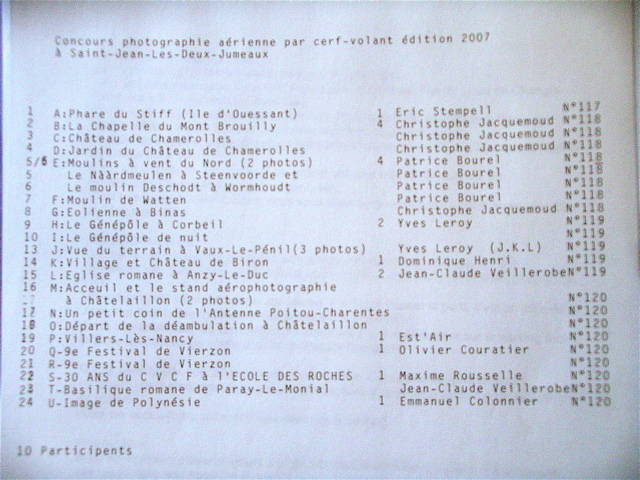
Voilà la liste des photos et des concurrents. Je me suis aperçu avec surprise que j'étais concurrent, avec une photo prise à Verneuil, mais à vocation plus reportage qu'artistique... Alors je n'ai pas eu de voix, mais je ne suis pas le seul !
WE Photo 2007 : Un week-end intéressant et inhabituel pour moi qui découvrait les coutumes de ce peuple. Il a fait un temps magnifique, bien que peu venteux. Une suggestion, on pourrait au retour des vols, présenter toutes les photos prises, ça m'aurait intéressé ! Je croyais aussi que ce serait beaucoup plus formel avec des exposés à tour de rôle. Ca a été plutôt tout ce qu'il y a d'informel et j'en ai été heureux, et c'est sûrement aussi bien. Bon, je ne suis pas aérophotographe, mais je me suis bien amusé quand même ! Continuez les gars !